전산응용기계제도기능사 (2012-07-22 기출문제)
1과목: 기계재료 및 요소
1. 탄소 공구강의 구비 조건으로 틀린 것은?
- 내마모성이 클 것
- 가공 및 열처리성이 양호할 것
- 저온에서의 경도가 클 것
- 강인성 및 내충격성이 우수할 것
(정답률: 75%)

2. 인장강도가 255~340MPa로 Ca-Si나 Fe-Si 등의 접종제로 접종 처리한 것으로 바탕조직은 펄라이트이며 내마멸성이 요구되는 공작기계의 안내면이나 강도를 요하는 기관의 실린더 등에 사용되는 주철은?
- 칠드 주철
- 미하나이트 주철
- 흑심가단 주철
- 구상흑연 주철
(정답률: 57%)
3. 원자기호와 비중과의 관계가 옳은 것은? (단, 비중은 20℃, 무산소동이다.)
- Al - 6.86
- Ag - 6.96
- Mg - 9.86
- Cu - 8.96
(정답률: 70%)
4. 황동은 어떤 원소의 2원 합금인가?
- 구리와 주석
- 구리와 망간
- 구리와 납
- 구리와 아연
(정답률: 72%)
5. 담금질 응력제거, 치수의 경년변화 방지, 내마모성 향상 등을 목적으로 100~200℃에서 마텐자이트 조직을 얻도록 조작을 하는 열처리 방법은?
- 저온뜨임
- 고온뜨임
- 항온풀림
- 저온풀림
(정답률: 55%)
6. 강재의 KS 규격 기호 중 틀린 것은?
- SKH - 고속도 공구강 강재
- SM - 기계 구조용 탄소 강재
- SS - 일반 구조용 압연 강재
- STS - 탄소 공구강 강재
(정답률: 67%)
7. 복합 재료 중에서 섬유 강화재료에 속하지 않는 것은?(문제 오류로 실제 시험장에서는 모두 정답처리 되었습니다. 처음 발표 당시 라번으로 정답이 발표되었습니다. 여기서는 라번을 정답 처리 합니다.)
- 섬유강화 플라스틱
- 섬유강화 금속
- 섬유강화 시멘트
- 섬유강화 고무
(정답률: 74%)
8. 볼트를 결합시킬 때 너트를 2회전하면 축 방향으로 10㎜, 나사산 수는 4산이 진행한다. 이와 같은 나사의 조건은?
- 피치 2.5㎜, 리드 5㎜
- 피치 5㎜, 리드 5㎜
- 피치 5㎜, 리드10㎜
- 피치 2.5㎜, 리드 10㎜
(정답률: 62%)
9. 다음 중 후크의 법칙에서 늘어난 길이를 구하는 공식은? (단, λ:변형량, W:인장하중, A:단면적, E:탄성계수, ι:길이 이다.)(문제 오류 입니다. 여기서는 가(1)번을 정답 처리 합니다. 라번의 보기와 가번의 보기가 중복되어 있네요. 추후 수정하여 두겠습니다.)
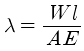
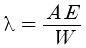
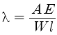
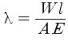
(정답률: 65%)
10. 기어, 풀리, 커플링 등의 회전체를 축에 고정시켜서 회전운동을 전달시키는 기계요소는?
- 나사
- 리벳
- 핀
- 키
(정답률: 68%)
2과목: 기계가공법 및 안전관리
11. 코일스프링의 전체 평균직경이 50㎜, 소선의 직경이 6㎜일 때 스프링 지수는 약 얼마인가?
- 1.4
- 2.5
- 4.3
- 8.3
(정답률: 66%)
12. 직선운동을 회전운동으로 변환하거나, 회전운동을 직선운동으로 변환하는데 사용되는 기어는?
- 스퍼 기어
- 베벨 기어
- 헬리컬 기어
- 랙과 피니언
(정답률: 57%)
13. 엔드 저널로서 지름이 50㎜의 전동축을 받치고 허용 최대 베어링 압력을 6N/㎡, 저널길이를 80㎜라 할 때 최대 베어링 하중은 몇 kN인가?
- 3.64kN
- 6.4kN
- 24kN
- 30kN
(정답률: 50%)
14. 축 이음 중 두 축이 평행하고 각 속도의 변동 없이 토크를 전달하는데 가장 적합한 것은?
- 올덤 커플링
- 플렉시블 커플링
- 유니버셜 커플링
- 플랜지 커플링
(정답률: 55%)
15. 나사의 끝을 이용하여 축에 바퀴를 고정시키거나 위치를 조정할 때 사용되는 나사는?
- 태핑 나사
- 사각 나사
- 볼 나사
- 멈춤 나사
(정답률: 57%)
16. 절삭공구 인선의 마모에 해당되지 않는 것은?
- 크레이터(crater)
- 플랭크(flank)
- 치핑(chipping)
- 드래싱(dressing)
(정답률: 64%)
17. 길이 측정에 적합하지 않은 것은?
- 버니어 캘리퍼스
- 마이크로미터
- 하이트게이지
- 수준기
(정답률: 75%)
18. 절삭공구 재료의 구비 조건으로 틀린 것은?
- 일감보다 단단하고 강인성이 필요하다.
- 절삭할 때 마찰계수가 커야 한다.
- 형상을 만들기가 쉽고 가격이 저렴해야 한다.
- 높은 온도에서도 경도가 필요하다.
(정답률: 72%)
19. 구성인선(built-up-edge)에 대한 일반적인 방지대책으로 옳은 것은?
- 마찰계수가 큰 절삭공구를 사용한다.
- 공구의 윗면 경사각을 크게 한다.
- 절삭 속도를 작게 한다.
- 절삭 깊이를 크게 한다.
(정답률: 58%)
20. 새들 위에 선회대가 있어 테이블을 일정한 각도로 회전시키거나 테이블 상·하로 경사시킬 수 있는 밀링 머신은?
- 수직밀링 머신
- 수평밀링 머신
- 만능 밀링 머신
- 램형밀링 머신
(정답률: 55%)
21. 래핑의 설명으로 옳은 것은?
- 건식은 랩과 일감사이에 랩재와 래핑액을 공급하며 가공하는 방식이다.
- 건식래핑 뒤에 습식래핑을 한다.
- 일감은 랩재질 보다 연해야 한다.
- 랩재로 탄화규소(SiC), 산화알루미나(Al2O3)가 주로 쓰인다.
(정답률: 51%)
22. 선반작업에서 주축의 회전수(rpm)를 구하는 공식으로 맞는 것은?
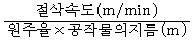
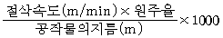
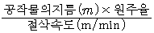
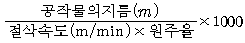
(정답률: 53%)
23. 보호구의 구비조건으로 틀린 것은?
- 착용 및 작업하기가 쉬워야 한다.
- 자기 몸에 맞아야 한다.
- 전기가 잘 통해야 된다.
- 유해 위험물에 대하여 완전한 방호가 되어야 한다.
(정답률: 91%)
24. 연삭가공의 특징을 설명한 내용으로 올바르지 않은 것은?
- 단단한 재료는 가공이 곤란하다.
- 정밀도가 높고 표면 거칠기가 우수하다.
- 연삭 압력 및 연삭 저항이 적어 마그네틱 척으로도 가공물을 고정할 수 있다.
- 연삭점의 온도가 높다.
(정답률: 55%)
25. M10×1.5 탭을 가공하기 위한 드릴링 작업 기초구멍으로 다음 중 가장 적합한 것은?
- 6.0㎜
- 7.5㎜
- 8.5㎜
- 9.0㎜
(정답률: 64%)
3과목: 기계제도
26. 입체도를 화살표(↖) 방향에서 보았을 때 제1각법의 좌측면도로 옳은 것은?
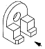
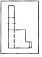
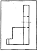
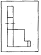
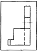
(정답률: 59%)
27. 그림의 도면의 양식에 대한 명칭이 틀린 것은?
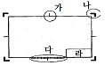
- [가] : 중심 마크
- [나] : 재단 마크
- [다] : 비교 눈금
- [라] : 부품란
(정답률: 67%)
28. 그림의 “C" 부분에 들어갈 기하 공차 기호로 가장 알맞은 것은?
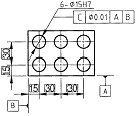
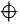
(정답률: 62%)
29. 기하공차의 종류에서 위치공차에 해당하는 것은?
- 평면도
- 원통도
- 동심도
- 직각도
(정답률: 58%)
30. 다음 끼워맞춤 공차 중 틈새가 가장 큰 것은?
- H7/p6
- H7/m6
- H7/h6
- H7/f6
(정답률: 61%)
31. 아래와 같은 그림의 일부를 도시하는 것으로도 충분한 경우에 그리는 투상도는?
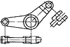
- 국부 투상도
- 부분 투상도
- 회전 투상도
- 부분 확대도
(정답률: 66%)
32. 다음 기계가공 중 일반적으로 표면을 가장 매끄럽게(표면 거칠기 값이 작게) 가공 할 수 있는 것은?
- 연삭기
- 드릴링 머신
- 선반
- 밀링
(정답률: 66%)
33. 치수 보조 기호와 의미가 잘못 연결된 것은?
- R - 반지름
- C - 45° 모떼기
- SR - 구의 반지름
- (50) - 이론적으로 정확한 치수
(정답률: 87%)
34. 다음 해칭에 대한 설명 중 틀린 것은?
- 해칭선은 수직 또는 수평의 중심선에 대하여 45°로 경사지게 긋는 것이 좋다.
- 인접한 단면의 해칭은 선의 방향 또는 각도를 변경 하거나 해칭 간격을 달리하여 긋는다.
- 단면 면적이 넓은 경우에는 그 외형선에 따라 적절한 범위에 해칭 또는 스머징을 한다.
- 해칭 또는 스머징하는 부분 안에 문자나 기호를 절대로 기입해서는 안 된다.
(정답률: 68%)
35. 다음 그림은 제3각법으로 나타낸 투상도이다. 평면도에 누락된 선을 완성한 것은?
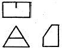
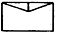
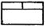
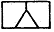
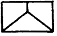
(정답률: 61%)
36. 최대 허용 한계치수와 최소 허용 한계치수와의 차이값을 무엇이라고 하는가?
- 공차
- 기준치수
- 최대 틈새
- 위치수 허용차
(정답률: 77%)
37. 축용 게이지 제작에 사용되는 IT 기본 공차의 등급은?
- IT 01 ~ IT 4
- IT 5 ~ IT 8
- IT 8 ~ IT 12
- IT 11 ~ IT 18
(정답률: 54%)
38. 가공 전 또는 가공 후의 모양을 표시하기 위해 사용하는 선의 종류는?
- 가는 1점 쇄선
- 가는 파선
- 가는 2점 쇄선
- 굵은 1점 쇄선
(정답률: 62%)
39. 표면 거칠기 기호를 간략하게 기입한 것으로 옳은 것은?
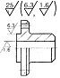
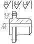
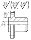
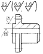
(정답률: 57%)
40. 도면에 사용되는 선, 문자가 겹치는 경우에 투상선의 우선 적용되는 순위로 맞는 것은?(오류 신고가 접수된 문제입니다. 반드시 정답과 해설을 확인하시기 바랍니다.)
- 문자 → 외형선 → 중심선 → 치수선
- 외형선 → 문자 → 중심선 → 숨은선
- 문자 → 숨은선 → 외형선 → 중심선
- 중심선 → 파단선 → 문자 → 치수보조선
(정답률: 81%)
41. 제3각법과 제1각법의 표준 배치에서 서로 반대 위치에 있는 투상도의 명칭은?
- 평면도와 저면도
- 배면도와 평면도
- 정면도와 저면도
- 정면도와 우측면도
(정답률: 71%)
42. 다음 그림은 어느 단면도에 해당하는가?
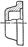
- 온 단면도
- 한쪽 단면도
- 회전도시 단면도
- 부분 단면도
(정답률: 53%)
43. 스케치할 물체의 표면에 광명단 또는 스탬프잉크를 칠한 다음 용지에 찍어 실형을 뜨는 스케치법은?
- 사진 촬영법
- 프린트법
- 프리핸드법
- 본뜨기법
(정답률: 69%)
44. KS표준 중 기계 부문에 해당 되는 분류기호는?
- KS A
- KS B
- KS C
- KS D
(정답률: 87%)
45. 치수기입의 원칙에 대한 설명으로 틀린 것은?
- 필요한 치수를 명료하게 도면에 기입한다.
- 가능한 한 주요 투상도에 집중하여 기입한다.
- 가능한 한 계산하여 구할 필요가 없도록 기입한다.
- 잘 알 수 있도록 중복하여 기입한다.
(정답률: 88%)
46. ISO 표준에 있는 미터 사다리꼴 나사를 표시하는 기호는?
- TM
- Tr
- TW
- PT
(정답률: 75%)
47. 그림과 같은 용접을 하고자 한다. 기호 표시로 옳은 것은?
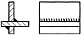
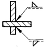
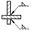
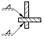
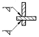
(정답률: 68%)
48. 다음 중 체크밸브의 그림 기호는?
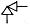
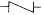
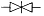
(정답률: 79%)
49. 코일 스프링의 제도방법 중 틀린 것은?
- 스프링은 원칙적으로 무하중인 상태로 그린다.
- 하중과 높이 또는 처짐과의 관계를 표시할 필요가 있을 때에는 선도 또는 표로 표시한다.
- 특별한 단서가 없는 한 모두 오른쪽 감기로 도시하고 왼쪽 감기로 도시할 때에는 “감김 방향 왼쪽”이라고 표시한다.
- 코일 스프링의 중간 부분을 생략할 때에는 생략하는 부분을 선지름의 중심선을 굵은 실선으로 그린다.
(정답률: 61%)
50. “6008C2P6"는 베어링 호칭 번호의 보기이다. 08의 의미는 무엇인가?
- 베어링 계열번호
- 안지름 번호
- 틈새기호
- 등급기호
(정답률: 84%)
51. 나사 제도시 수나사와 암나사의 골지름을 표시하는 선은?
- 굵은 실선
- 가는 1점 쇄선
- 가는 실선
- 가는 2점 쇄선
(정답률: 64%)
52. 다음 중 리벳의 호칭 방법으로 올바른 것은?
- 규격 번호, 종류, 호칭지름×길이, 재료
- 규격 번호, 길이×호칭지름, 종류, 재료
- 재료, 종류, 호칭지름×길이, 규격 번호
- 종류, 길이×호칭지름, 재료, 규격 번호
(정답률: 62%)
53. 래크와 기어의 이가 서로 완전히 접하도록 겹쳐 놓았을 때, 기어의 기준 원통과 기준 래크의 기준면 사이를 공통 법선을 따라 측정한 거리를 무엇이라 하는가?
- 공칭 피치
- 전위량
- 법선 피치
- 오버핀 치수
(정답률: 53%)
54. 스퍼 기어에서 모듈(m)이 4, 피치원 지름(D)이 72㎜일 때 전체 이높이(H)는?
- 4.0㎜
- 7.5㎜
- 9.0㎜
- 10.5㎜
(정답률: 69%)
55. 축의 제도에 대한 설명으로 옳은 것은?
- 축은 가공 방향에 관계없이 도시 할 수 있다.
- 축은 길이 방향으로 절단하여 전단면도로 그린다.
- 긴 축 이라도 중간 부분을 절단해서 그릴 수 없다.
- 축에 빗줄 널링을 표시 할 경우에는 축선에 대하여 30°로 엇갈리게 표현한다.
(정답률: 66%)
56. 다음 설명과 관련된 V-벨트의 종류는?
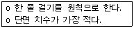
- A형
- B형
- E형
- M형
(정답률: 68%)
57. CAD시스템에서 데이터 저장장치가 아닌 것은?
- USB메모리
- HDD
- LIGHT PEN
- CD-ROm
(정답률: 83%)
58. 사진 또는 그림과 같이 종이 위의 도형의 정보를 그래픽 형태로 읽어 들여 컴퓨터에 전달하는 입력장치는?
- 트랙볼(track ball)
- 라이트 펜(light pen)
- 스캐너(scanner)
- 디지타이저(digitizer)
(정답률: 73%)
59. CAD시스템에서 도면상 임의의 점을 입력할 때 변하지 않는 원점(0,0)을 기준으로 정한 좌표계는?
- 상대 좌표계
- 상승 좌표계
- 증분 좌표계
- 절대 좌표계
(정답률: 85%)
60. 솔리드 모델링의 특징을 열거한 것 중 틀린 것은?
- 은선 제거가 불가능하다.
- 간섭 체크가 용이하다.
- 물리적 성질 등의 계산이 가능하다.
- 형상을 절단하여 단면도 작성이 용이하다.
(정답률: 70%)